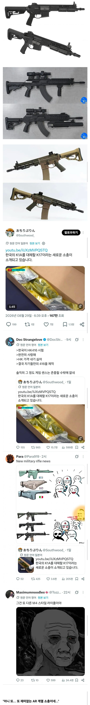

니들 좋으라고 만든거 아니야 새기들아..

니들 좋으라고 만든거 아니야 새기들아..
K1, K2 가 제식소총 치고 꽤 힙한편이긴 했지
개머리판 접히는거 미군들이 존나 부러워하긴 했음ㅋ
근데 좀만 오래쓰면 개머리판이 춤을춤
그정돈 아니지 않나 전역할때까지 빳빳했는데 내껀
그건 발로 개머리판 접는다고 바닥에 대고
발로 개머리판 걷어차는 행위가 많아서
그런거임 ....
m16 썼늗네 개머리판 접히는게 ㄹㅇ 부러웠음
이제 장전손잡이 안뿌러지는거맞지?
총겜 좋아하는 입장에선 뭔소린지 알거같음 ㅋㅋㅋㅋㅋㅋ
싱글fps에서도 결국 범용성 좋은 AR을 주무기로 쓰게되더라 ㅋㅋ
일종의 수렴진화인가
자동소총 나온이후 엄청난 혁신은 없다고 봐야해서 수렴진화할 수밖에 없지
수렴진화가 맞음ㅋㅋ
총기의 게새끼화라고 누가 그러더라
게새끼 ㅋㅋㅋㅋㅋㅋㅋ
공군이어서 m16썼었는데, 육군쪽에서 가스조절기 어쩌고 할때 뭔가 좀 번거로운게 많구나 느꼈음.
단순하고도 신뢰성높은게 최고지
저는 공군 군수사여서 m16 썼는데 헌급방 친구들 k2 쓰던데 밥묵을 때 개머리판 접고 편하게 먹는건 많이 부러웠어요. k2도 쏴보고 싶었는데 아쉽
특허도 풀려있는데 개머리판 개조하는걸 왜 안하나 싶어 좀 찾아봤는데, m16 개머리판 내부에 완충스프링이 들어가 있어서 애초부터 개머리판이 접히는 개조는 불가능하다네요. 아쉽
가스조절기는 한반도 날씨가 지랄맞아서 그럴거임
M16은 가스직동식 이라 사실 구조는 K2가 더 단순함
K2에 가스조절기가 있는 이유는 추운 상황을 대비한거
단순하다는게 사용자가 신경쓸 일이 적다는 얘기였는데, 구조가 k2쪽이 더 단순하다면 m16쪽도 관리쪽에 번거로운면이 있을수 있겠네. 내가 잘몰랐음
M16쪽이 탄매 청소를 좀 더 자주 해야한다던데 시간이 지나면서 어느정도 개선됐다고 들었음 직접써본건 아니라서 모르겠다
심지어 러시아 특수부대들도 글록, HK416, 옵스코어 fast 헬멧이라는 삼종 세트를 착용하고 다니는 세상임
낭만은 자기 목숨을 안구해줌..
너네가 실망하면 뭐 어쩔건데 ㅋㅋㅋ
AK 도 보이고 k계열 요소도 보이고 M416 요소도 보이고.. 신기한 모습인데..ㅋㅋ
사진 순서대로...
k17 (짧은)
k18 (ak와 동일한 7.62mm)
k13 (더 짧은)
우리도 ar 좀 써보자
저렇게 만들면 엄청 뜨거워지던데
이제 장갑 필수임?
총열덮개 어차피 지급하고.. 어차피 대부분의 병력은 총 과열되기 전에 뒤짐
승리의 AR-15... 유진 스토너가 이 소총을 콜트에 팔지 않았더라면....ㄷㄷ
별개로 어떤 외국 총기 전문가도 총기 트렌드가 AR-15로 수렴진화되서 다양성 측면에서 아쉽다는 말을 한 적이 있음...